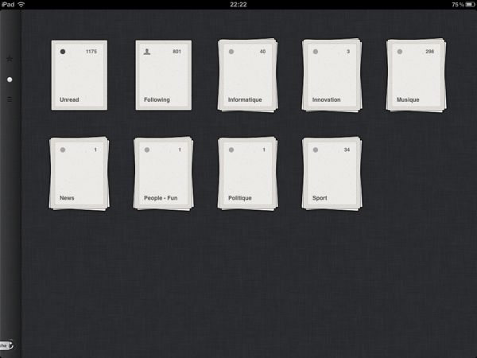
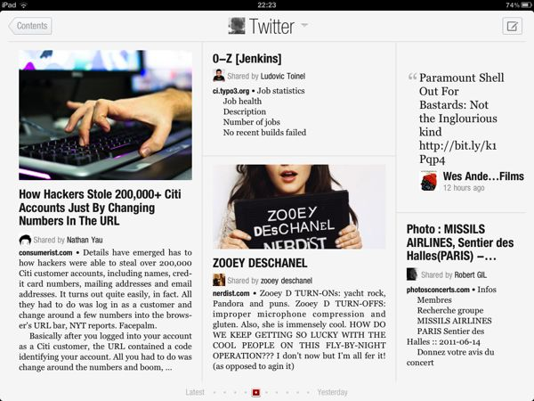
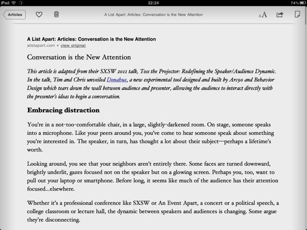
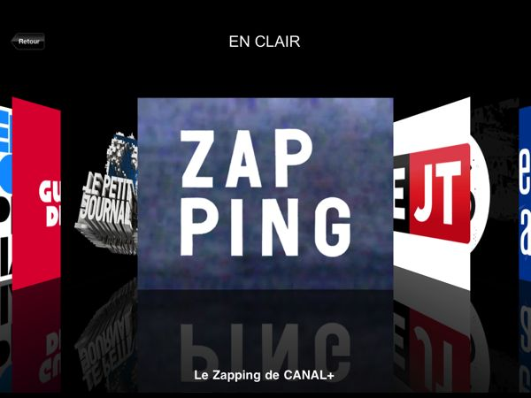
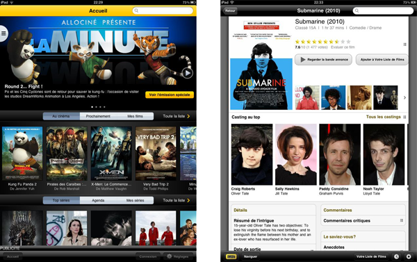

My Top 5 iPad Applications
iPad are getting more and more popular and my friends start asking me what apps I recommend. Games apart, here are the ones I’m using the most (on an iPad usage, not iPhone usage).
Reeder
Reeder is my number 1 app on the iPad. That’s the one I’m using for my morning
coffee, my daily RSS feeds review (and by the way, I publish the highlight on
this website) (edit: I used to publish…)
I feel people are not using RSS enough. Come on people, use RSS feeds, they’re awesome!

Flipboard makes a digital magazine out of your Facebook or Twitter accounts.

Instapaper
Instapaper is a distraction-free web pages reeder. No matter how shitty the original page typography is, Instapaper makes it beautiful, easy to read, removing all the content that could distract you from the core content that interests you (CSS, links, ad banners, …)

CANAL+
This TV channel application is nicely made and allows to access all of Canal+ free contents. If you’re a subscriber, there’s even the possibility to watch the TV live on the device.

Allociné & IMDB
These 2 apps are great. Classic content: you get access to all their website counterpart information, plus some nice features involving geolocation, etc.

And two more for the road:
- Friendly: the substitute of an official Facebook app
- Flickpad Pro: browsing of pictures from your Facebook and Flickr contacts